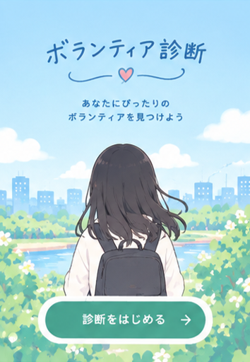

♡
ボランティア診断
あなたの「人を助ける気質」を見つけよう
あなたに合うボランティアを見つけてみよう！
最初の画面の画像

日常の中で、あなたがどんなふうに人を助けることが多いかをもとに診断するよ。 正解・不正解はないので、いつもの自分に近いものを選んでね。
全12問＋やってみたいボランティアについての質問1問です。 最後の質問は診断の点数には入りません。
あなたの「人を助ける気質」を見つけよう

日常の中で、あなたがどんなふうに人を助けることが多いかをもとに診断するよ。 正解・不正解はないので、いつもの自分に近いものを選んでね。
全12問＋やってみたいボランティアについての質問1問です。 最後の質問は診断の点数には入りません。